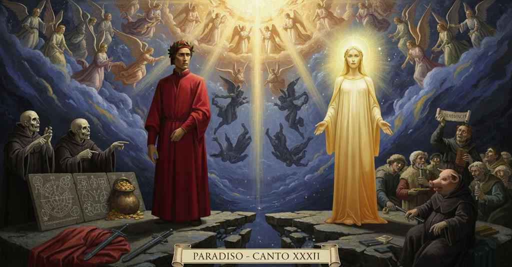

Paradiso — Canto 29

Beatrice chiarisce i dubbi di Dante sulla creazione degli angeli, la loro caduta e la loro innumerevole natura, condannando aspramente i predicatori che sulla terra distorcono il Vangelo per vanagloria. Beatrice clarifies Dante's doubts about the creation of the angels, their fall, and their innumerable nature, harshly condemning preachers on earth who distort the Gospel for vainglory. ベアトリーチェは、天使の創造、その堕落、そしてその無数の本性に関するダンテの疑問を解き明かし、虚栄心から地上で福音を歪める説教者たちを厳しく非難する。
1
Quando ambedue li figli di Latona,
When both the children of Latona,
ラトナの二人の息子が、
2
coperti del Montone e de la Libra,
covered by the Ram and by the Scales,
牡羊と天秤に覆われ、
3
fanno de l’orizzonte insieme zona,
make of the horizon a zone together,
共に地平を帯とする時、
4
quant’ è dal punto che ’l cenìt inlibra
for as long as from the point that the zenith holds them in balance
天頂が両者を釣り合わせる点から
5
infin che l’uno e l’altro da quel cinto,
until the one and the other from that girdle,
片方ともう片方がその帯から、
6
cambiando l’emisperio, si dilibra,
changing hemisphere, are set free,
半球を変えて、均衡を解くまでの
7
tanto, col volto di riso dipinto,
for that long, with her face painted with a smile,
ほんの束の間、微笑みを顔に浮かべ、
8
si tacque Bëatrice, riguardando
Beatrice was silent, gazing
ベアトリーチェは黙し、見つめていた
9
fiso nel punto che m’avëa vinto.
fixedly on the point that had overcome me.
私を打ち負かした一点を、じっと。
10
Poi cominciò: «Io dico, e non dimando,
Then she began: “I tell, and do not ask,
やがて彼女は始めた、「私は語り、問いはしない、
11
quel che tu vuoli udir, perch’ io l’ho visto
that which you wish to hear, because I have seen it
あなたが聞きたいことを。なぜなら私はそれを見たから
12
là ’ve s’appunta ogne ubi e ogne quando.
there where every ubi and every quando is centered.
あらゆる『どこ』とあらゆる『いつ』が一点に集まる場所で。
13
Non per aver a sé di bene acquisto,
Not to have for Himself a gain of good,
自らのために善を得るためではなく、
14
ch’esser non può, ma perché suo splendore
which cannot be, but so that His splendor
それはあり得ぬことだが、自らの輝きが
15
potesse, risplendendo, dir “Subsisto”,
might, by shining back, say ‘Subsisto,’
輝きながら『我は存在する』と言えるように、
16
in sua etternità di tempo fore,
in His eternity, outside of time,
その永遠のうちに、時の外に、
17
fuor d’ogne altro comprender, come i piacque,
beyond all other comprehension, as it pleased Him,
他のいかなる理解も超えて、御心に適うままに、
18
s’aperse in nuovi amor l’etterno amore.
the eternal Love opened into new loves.
永遠の愛は新たな愛へと自らを開いた。
19
Né prima quasi torpente si giacque;
Nor before did He lie as if torpid;
それ以前に、怠惰に横たわっていたわけではない。
20
ché né prima né poscia procedette
for neither before nor after did proceed
なぜなら『前』も『後』もなく進んだのだから
21
lo discorrer di Dio sovra quest’ acque.
the moving of God over these waters.
神がこの水の上を行き来することは。
22
Forma e materia, congiunte e purette,
Form and matter, conjoined and pure,
形相と質料は、結合したものも純粋なものも、
23
usciro ad esser che non avia fallo,
came forth into a being that had no flaw,
欠陥なき存在として現れ出た、
24
come d’arco tricordo tre saette.
like three arrows from a three-stringed bow.
三弦の弓から放たれる三本の矢のように。
25
E come in vetro, in ambra o in cristallo
And as in glass, in amber, or in crystal
そしてガラスや、琥珀や、水晶の中で
26
raggio resplende sì, che dal venire
a ray so shines that from its coming
光が輝くように、その到来から
27
a l’esser tutto non è intervallo,
to its being whole there is no interval,
完全に存在するまでに、間隔はない。
28
così ’l triforme effetto del suo sire
so the threefold effect of its Lord
そのように、主君の三様の被造物は
29
ne l’esser suo raggiò insieme tutto
rayed into its being all at once
その存在の中に、すべて同時に輝き出た
30
sanza distinzïone in essordire.
without distinction in its beginning.
その始まりにおいて、区別なく。
31
Concreato fu ordine e costrutto
Co-created were order and structure
秩序は諸実体と同時に創られ、構築された。
32
a le sustanze; e quelle furon cima
for the substances; and those were the summit
そしてそれらは世界の頂点であった、
33
nel mondo in che puro atto fu produtto;
of the world in which pure act was produced;
純粋な現実態が生み出された世界において。
34
pura potenza tenne la parte ima;
pure potentiality held the lowest part;
純粋な可能態は最下部を占め、
35
nel mezzo strinse potenza con atto
in the middle, potentiality with act was bound by
中央では可能態と現実態が結びついた
36
tal vime, che già mai non si divima.
such a tie that it is never untied.
決して解かれることのない、そのような絆で。
37
Ieronimo vi scrisse lungo tratto
Jerome wrote for you of a long tract
ヒエロニムスは書いた、天使たちは
38
di secoli de li angeli creati
of centuries of the angels being created
幾世紀にもわたり創造されたと、
39
anzi che l’altro mondo fosse fatto;
before the other world was made;
他の世界が作られるよりも前に。
40
ma questo vero è scritto in molti lati
but this truth is written on many sides
しかしこの真理は多くの箇所に書かれている
41
da li scrittor de lo Spirito Santo,
by the writers of the Holy Spirit,
聖霊の筆者たちによって。
42
e tu te n’avvedrai se bene agguati;
and you will perceive it if you look closely;
そして君も、よく注意すれば気づくだろう。
43
e anche la ragione il vede alquanto,
and reason also sees it somewhat,
そして理性もまた、それをいくらかは見て取る。
44
che non concederebbe che ’ motori
for it would not grant that the movers,
というのも、動者たちが
45
sanza sua perfezion fosser cotanto.
without their perfection, could be for so long.
その完成なしに、かくも長く存在したとは認めないだろう。
46
Or sai tu dove e quando questi amori
Now you know where and when these loves
さあ、君は知った、これらの愛（天使）がどこで、いつ、
47
furon creati e come: sì che spenti
were created and how: so that quenched
そしてどのように創造されたかを。かくして、君の望みの
48
nel tuo disïo già son tre ardori.
in your desire are now three ardors.
うち、三つの熱情はすでに消されたのだ。
49
Né giugneriesi, numerando, al venti
Nor would one, in counting, reach twenty
数えながら、二十に至ることもないだろう
50
sì tosto, come de li angeli parte
so quickly as a part of the angels
それほど速く、天使たちの一部が
51
turbò il suggetto d’i vostri alimenti.
troubled the subject of your elements.
汝らの元素の素地を乱したのだ。
52
L’altra rimase, e cominciò quest’ arte
The other part remained, and began this art
残りの者たちは留まり、この術を始めた、
53
che tu discerni, con tanto diletto,
that you discern, with so much delight,
汝がこれほどの喜びをもって見ている、
54
che mai da circüir non si diparte.
that from circling it never departs.
決して周回から離れることのない術を。
55
Principio del cader fu il maladetto
The source of the fall was the accursed
堕落の始まりは、呪われた
56
superbir di colui che tu vedesti
pride of him whom you saw
傲慢であった、汝が見た者の、
57
da tutti i pesi del mondo costretto.
constrained by all the weights of the world.
世界のあらゆる重みに押し潰された者の。
58
Quelli che vedi qui furon modesti
Those whom you see here were modest
汝がここに見る者たちは謙虚であった、
59
a riconoscer sé da la bontate
in recognizing themselves from the goodness
自らが善性から生まれたと認めることに、
60
che li avea fatti a tanto intender presti:
that had made them so quick to understand:
彼らをかくも速やかに理解させた善性から。
61
per che le viste lor furo essaltate
for which their sights were exalted
それゆえに彼らの視覚は高められた、
62
con grazia illuminante e con lor merto,
with illuminating grace and with their merit,
光を与える恩寵と自らの功徳によって、
63
si c’hanno ferma e piena volontate;
so that they have a firm and full will;
固く完全な意志を持つほどに。
64
e non voglio che dubbi, ma sia certo,
and I want you not to doubt, but be certain,
そして疑うことなく、確信してほしい、
65
che ricever la grazia è meritorio
that to receive grace is meritorious
恩寵を受けることは功徳であると、
66
secondo che l’affetto l’è aperto.
according to how one’s affection is open.
情愛がそれに対して開かれている度合いに応じて。
67
Omai dintorno a questo consistorio
Now, concerning this consistory,
今やこの聖会については
68
puoi contemplare assai, se le parole
you can contemplate enough, if my words
十分に観想できるだろう、もし私の言葉が
69
mie son ricolte, sanz’ altro aiutorio.
are gathered, without other help.
他の助けなくして、受け入れられたのなら。
70
Ma perché ’n terra per le vostre scole
But because on earth in your schools
しかし地上では汝らの学舎で
71
si legge che l’angelica natura
one reads that the angelic nature
天使の本性は
72
è tal, che ’ntende e si ricorda e vole,
is such, that it understands and remembers and wills,
理解し、記憶し、意志すると読まれるゆえ、
73
ancor dirò, perché tu veggi pura
I will say more, so you may see purely
さらに語ろう、汝が純粋に見るために
74
la verità che là giù si confonde,
the truth that down there is confused,
かの地で混同されている真理を、
75
equivocando in sì fatta lettura.
equivocating in such a reading.
そのような読み方で誤解して。
76
Queste sustanze, poi che fur gioconde
These substances, since they were gladdened
これらの実体は、喜びに満たされてより
77
de la faccia di Dio, non volser viso
by the face of God, have not turned their sight
神の御顔から、視線を転じなかった、
78
da essa, da cui nulla si nasconde:
from it, from which nothing is hidden:
そこからは何ものも隠されぬ御顔から。
79
però non hanno vedere interciso
therefore they do not have their vision interrupted
ゆえに彼らの視覚は遮られない
80
da novo obietto, e però non bisogna
by a new object, and therefore have no need
新たな対象によって、それゆえ必要ないのだ
81
rememorar per concetto diviso;
to remember through a divided concept;
分割された概念によって思い出すことが。
82
sì che là giù, non dormendo, si sogna,
so that down there, not sleeping, one dreams,
それゆえかの地では、眠らずして夢を見、
83
credendo e non credendo dicer vero;
believing and not believing they speak the truth;
真実を語ると信じ、また信じずにいる。
84
ma ne l’uno è più colpa e più vergogna.
but in the one is more guilt and more shame.
しかし前者にはより多くの罪と恥がある。
85
Voi non andate giù per un sentiero
You do not go down by one path
あなた方は一つの道を下ってはいない
86
filosofando: tanto vi trasporta
in your philosophizing: so much does the love of appearance
哲学しながら。それほどにあなた方を運ぶのは
87
l’amor de l’apparenza e ’l suo pensiero!
and its thought transport you!
外見への愛とその思想なのだ！
88
E ancor questo qua sù si comporta
And even this is borne up here
そしてそれでも、ここ天上でこれは耐えられているのだ
89
con men disdegno che quando è posposta
with less disdain than when the divine Scripture
神の聖書が蔑ろにされたり
90
la divina Scrittura o quando è torta.
is put aside or when it is distorted.
あるいは歪められたりする時よりも、少ない軽蔑をもって。
91
Non vi si pensa quanto sangue costa
You do not think how much blood it costs
彼らは考えない、どれほどの血の代価を払ったかを
92
seminarla nel mondo e quanto piace
to sow it in the world and how much he pleases
それを世に蒔くために。そしてどれほど喜ばれるかを
93
chi umilmente con essa s’accosta.
who humbly draws near to it.
それに謙虚に近づく者が。
94
Per apparer ciascun s’ingegna e face
To make a show, each one contrives and makes
見栄を張るために、各々が工夫を凝らして作り出す
95
sue invenzioni; e quelle son trascorse
his own inventions; and those are recited
自らの創見を。そしてそれらが説かれるのだ
96
da’ predicanti e ’l Vangelio si tace.
by the preachers, and the Gospel is kept silent.
説教者たちによって。そして福音は黙したままだ。
97
Un dice che la luna si ritorse
One says that the moon drew back
ある者は言う、月は後退したと
98
ne la passion di Cristo e s’interpuose,
during the passion of Christ and interposed itself,
キリストの受難の際に、そして間に割って入ったと。
99
per che ’l lume del sol giù non si porse;
so that the sun’s light did not reach down below;
それゆえ太陽の光は地上に届かなかったのだと。
100
e mente, ché la luce si nascose
and he lies, for the light hid itself
そして彼は嘘をつく、なぜなら光は自ら隠れたのだから。
101
da sé: però a li Spani e a l’Indi
of its own accord: that is why to the Spaniards and the Indians
だからスペイン人にもインド人にも
102
come a’ Giudei tale eclissi rispuose.
as to the Jews such an eclipse responded.
ユダヤ人たちと同じように、そのような日食は応えたのだ。
103
Non ha Fiorenza tanti Lapi e Bindi
Florence has not so many Lapis and Bindis
フィレンツェにはそれほど多くのラピやビンディはいない
104
quante sì fatte favole per anno
as fables of this sort per year
年ごとに、そのような作り話が
105
in pergamo si gridan quinci e quindi:
are shouted from the pulpit here and there:
あちこちの説教壇で叫ばれるほどには。
106
sì che le pecorelle, che non sanno,
so that the little sheep, who do not know,
そのため、何も知らない子羊たちは、
107
tornan del pasco pasciute di vento,
return from the pasture fed on wind,
牧草地から戻る、風を食わされて。
108
e non le scusa non veder lo danno.
and not seeing the harm does not excuse them.
そして害を見ないことは、彼女たちの言い訳にはならない。
109
Non disse Cristo al suo primo convento:
Christ did not say to his first assembly:
キリストは最初の集いに言われなかった
110
‘Andate, e predicate al mondo ciance’;
‘Go, and preach trifles to the world’;
「行け、そして世に戯言を説け」とは。
111
ma diede lor verace fondamento;
but he gave them a truthful foundation;
むしろ彼らに真実の基礎を与えられた。
112
e quel tanto sonò ne le sue guance,
and that alone so resounded on their cheeks,
そしてそれだけが彼らの頬に鳴り響いたのだ、
113
sì ch’a pugnar per accender la fede
that to fight to enkindle the faith
それゆえ、信仰を燃え立たせるために戦うにあたり
114
de l’Evangelio fero scudo e lance.
they made of the Gospel a shield and lance.
福音を盾とし、槍としたのだ。
115
Ora si va con motti e con iscede
Now they go with jests and with buffooneries
今では冗談や道化で説教に出かけ、
116
a predicare, e pur che ben si rida,
to preach, and as long as there is a good laugh,
そして大いに笑いが取れさえすれば、
117
gonfia il cappuccio e più non si richiede.
the cowl puffs up and nothing more is required.
頭巾は膨らみ、それ以上は何も求められない。
118
Ma tale uccel nel becchetto s’annida,
But such a bird nests in the little hood,
しかし、そのような鳥がその小さな頭巾に巣食っている、
119
che se ’l vulgo il vedesse, vederebbe
that if the common folk could see it, they would see
もし民衆がそれを見たなら、見るだろう
120
la perdonanza di ch’el si confida:
the pardon in which they trust:
彼らが信頼する赦しが何であるかを。
121
per cui tanta stoltezza in terra crebbe,
through which so much stupidity has grown on earth,
それゆえに、地上ではかくも多くの愚かさが育ち、
122
che, sanza prova d’alcun testimonio,
that, without proof of any testimony,
何の証拠もなしに、
123
ad ogne promession si correrebbe.
they would run to every promise.
あらゆる約束に駆け寄るのだ。
124
Di questo ingrassa il porco sant’ Antonio,
On this the pig of Saint Anthony fattens,
これで太るのだ、聖アントニウスの豚が、
125
e altri assai che sono ancor più porci,
and many others who are even more pigs,
そして、さらに豚である他の多くの者たちが、
126
pagando di moneta sanza conio.
paying with money without a mint-mark.
刻印のない貨幣で支払って。
127
Ma perché siam digressi assai, ritorci
But since we have digressed enough, turn back
しかし我らは大いに脇道に逸れたゆえ、向きを変えよ
128
li occhi oramai verso la dritta strada,
your eyes now toward the straight path,
その目を今や正しい道へと、
129
sì che la via col tempo si raccorci.
so that the way with the time may be shortened.
道が時と共に短くなるように。
130
Questa natura sì oltre s’ingrada
This nature so far grades itself upward
この本性（天使）は数において、かくも高く階梯を上り、
131
in numero, che mai non fu loquela
in number, that there never was a speech
いまだかつて言葉も
132
né concetto mortal che tanto vada;
or mortal concept that could go so far;
それほどまで及ぶ人間の概念もなかった。
133
e se tu guardi quel che si revela
and if you look at what is revealed
そして汝がダニエルによって
134
per Danïel, vedrai che ’n sue migliaia
by Daniel, you will see that in his thousands
明かされたものを見れば、彼の「幾千」のうちに
135
determinato numero si cela.
a determined number is concealed.
定まった数が隠されているのを見るだろう。
136
La prima luce, che tutta la raia,
The Primal Light, which irradiates it all,
全てを照らす第一の光は、
137
per tanti modi in essa si recepe,
is received within it in as many ways
非常に多くの仕方でその（天使の）本性の中に受け入れられる、
138
quanti son li splendori a chi s’appaia.
as are the splendors to which It is joined.
それが対になる輝きの数と同じだけ。
139
Onde, però che a l’atto che concepe
Whence, because to the act that conceives
それゆえ、認識するという行為に
140
segue l’affetto, d’amar la dolcezza
follows the affection, the sweetness of loving
愛という情が続くので、愛することの甘美さは
141
diversamente in essa ferve e tepe.
glows hotly and mildly in it diversely.
その中で様々に燃え、また温まる。
142
Vedi l’eccelso omai e la larghezza
See now the height and the breadth
見よ、今やその高みと広さを
143
de l’etterno valor, poscia che tanti
of the eternal Worth, since It has made
永遠の価値の、これほど多くの
144
speculi fatti s’ha in che si spezza,
so many mirrors for itself, in which It is broken,
鏡を自らに作り、その中に自らを分かっているのだから、
145
uno manendo in sé come davanti».
remaining one in itself as before.”
以前のように自らは一なるままに留まりながら」。